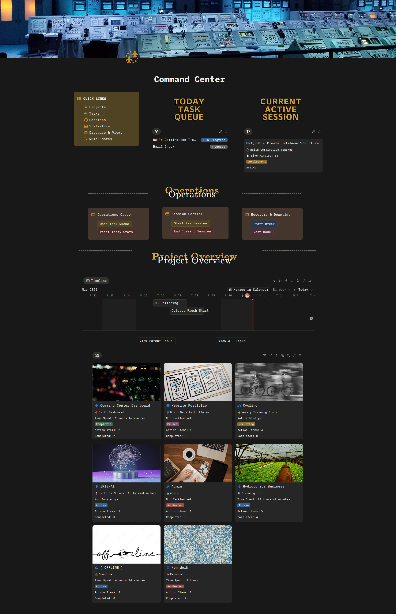

Executive
Operations
When everything depends on you, even small tasks start piling up fast.
I step in to help organize the moving parts, reduce friction,
and keep things running consistently behind the scenes.
[ Calendar Architecture ]
Design your week strategically,
not reactively.
Your calendar is your most valuable asset. I shape it to protect your deep work while ensuring collaborative momentum doesn't stall.
[ The Problem ]
Most executive calendars are a patchwork of urgency. Meetings are scattered, creating "Swiss cheese" gaps too small for deep work. By Friday, zero strategic progress has been made.
[ The Solution ]
An optimized architecture that separates work by cognitive load. We protect focus blocks, batch administrative friction, and align meetings with your energy peaks.
[ SELECT A STATE TO VIEW ARCHITECTURE ]
How It's Designed
01. Energy Alignment
Collaborative tasks in social mornings. Deep focus when your brain is sharpest.
02. Invisible Buffers
Mandatory 15m context-switch windows between calls and 30m decompression blocks.
03. Sacred Deep Work
Non-negotiable blocks for strategy defended by automation and DND protocols.
04. The Friday Ritual
A 60-minute weekly review to audit the past 5 days and architect the next 7.
Tools I'd use
- Google Calendar
- Cal.com / Calendly
- Slack Automation
What this solves
- ✓ 40% Admin Reduction
- ✓ Zero Decision Fatigue
- ✓ 4hr Weekly Strategy Time
[ Inbox Management ]
Zero Inbox is a
system, not a habit.
Email is a decision-making bottleneck. I engineer the flow to ensure you only see what moves the needle, reducing inbox volume by 70%.
[ The Problem ]
Email is a distraction by design. Most inboxes are reactive—everything lands in one place, and nothing is prioritized. You're checking email 30+ times a day. Important decisions get buried. Urgent distracts from important.
[ The Solution ]
I'd architect your inbox so only decision-critical emails stay active. Everything else auto-routes: archive, delegate, digest, decide. The result: 90% of your email never touches your inbox.
Strategic Inbox Flow
Email RoutingIs it automated?
Repetitive or low-priority emails are filtered automatically to reduce manual sorting and clutter.
Can someone else handle it?
Delegatable requests are routed immediately to reduce bottlenecks and protect executive focus.
Is information needed only?
Non-actionable messages are condensed into summaries to minimize unnecessary context switching.
Strategic Inbox
Only the emails requiring direct attention remain visible — reducing noise while preserving operational awareness.
How It Works
Auto-Archive
Receipts, confirmations, and notifications. Useful for reference, but noise in the present. They skip the inbox and go straight to [Searchable Reference].
Delegate
Scheduling, vendor queries, and FYI threads. These are auto-routed to the VA or team leads. You receive a curated [Executive Summary] on Friday.
The Digest
Newsletters, industry reports, and status updates. These are batched and labeled, to be consumed during designated [Low-Cognitive Windows].
Strategic Inbox
Critical decisions, investor relations, and direct leadership asks. This is the only folder that triggers a notification.
Category Reference
| Category | Type of Email | Action | Tool/Label |
|---|---|---|---|
| Auto-Archive | Receipts, confirmations, invoices | Skip inbox, label & archive | Gmail: "Receipts" filter |
| Delegate | Scheduling, vendor queries, FYI | Auto-forward to VA/Team | Gmail: Forwarding rule |
| Digest | Team updates, reports, newsletters | Batch for weekly review | Gmail: "Digest" label |
| Strategic Inbox | Strategic asks, client decisions | Batch 2x daily (9am / 4pm) | Default Inbox |
Filter Rules
// Email Protocol Snippets
// Rule: Transactional Silence
// We catch them early, label them for later reference, and keep your focus on what matters.
Filter: from:(noreply | no-reply) OR subject:(Receipt | Confirmation)
Action: Skip inbox, apply label "Reference"
// Rule: Operational Delegation
// We route them to your VA or team, you get a summary on Friday.
Filter: subject:(Schedule | Booking | Invoice | Vendor)
Action: Forward to va@system.com, archive
// We'll audit your inbox, identify what's noisy, and build rules around your workflow.
Integration
How This Ties to Your Calendar
Your email processing is strictly batched into the
[Admin Windows] defined in the Calendar
Architecture.
By processing the Strategic Inbox only during
your scheduled Tuesday (1–2pm) and Friday (10–11am) blocks, we
decouple communication from production, protecting your deep work
from fragmentation.
Build clarity across
projects, tasks, and operations.
Projects, tasks, requests, and priorities can quickly become scattered across emails, chats, meetings, and mental notes.
I build lightweight operational systems that bring the moving parts into one place — helping teams track work, maintain visibility, and make better decisions with less manual effort.
Your calendar and inbox can also feed into the same workflow through automation or through me as the main workflow organizer, so you only see the action items while still staying informed on the important nuances.
Track
Tasks, tickets, and action items
Manage
Projects, deadlines, and priorities
Centralize
Quick notes, meeting notes, and minutes
Report
Dashboards, progress, and statistics

Track requests from capture to completion.
Requests, follow-ups, and action items are turned into visible tasks with clear status, priority, and next steps instead of disappearing into chat or email threads.
See progress at a glance.
Projects, priorities, blockers, and next actions stay organized in one place so progress is easier to review, update, and communicate.
Turn activity into insight.
Dashboards and statistics help show workload, completed work, active items, and operational trends without constant manual checking.
Not locked to one tool.
This Command Center is a concept and methodology I adapted into Notion, but the system does not have to stay there. Depending on your existing workflow, tools, and team habits, I can adapt the same structure into other project management or operations tools so the system fits how you already work.